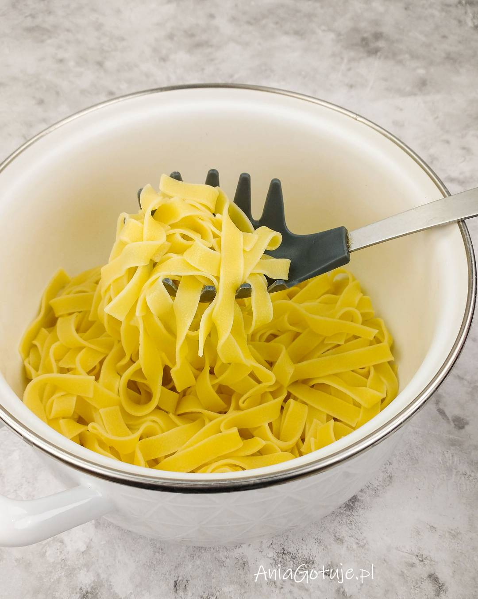
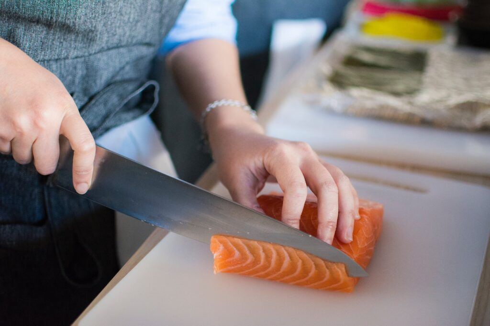
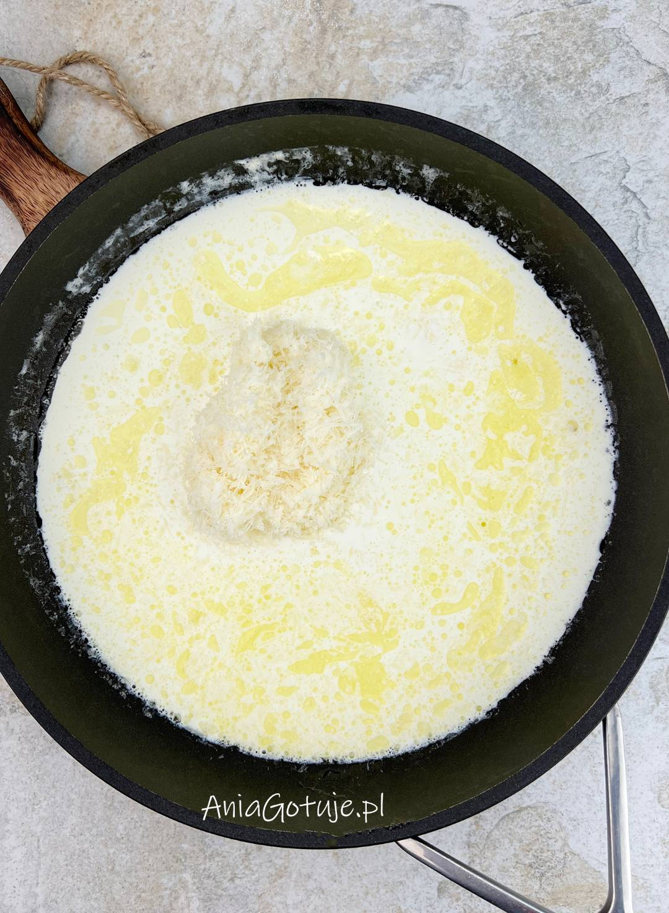
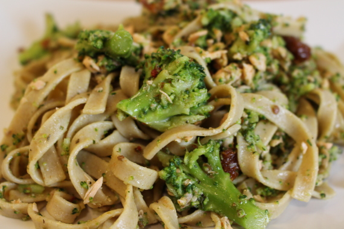

Ugotuj makaron tagliatelle zgodnie z instrukcją na opakowaniu. W międzyczasie podziel brokuł na różyczki i wrzuć go do wrzątku na około 3–4 minuty, aby był lekko chrupiący. Odcedź i odstaw.
Jeśli używasz świeżego łososia, usuń skórę i pokrój go na mniejsze kawałki. Na patelni rozgrzej masło i podsmaż czosnek przez kilkanaście sekund. Dodaj łososia i smaż, aż zmieni kolor. Przy wędzonym łososiu — wystarczy lekko go podgrzać.
Wlej na patelnię śmietankę i delikatnie wymieszaj. Dopraw solą, pieprzem oraz odrobiną soku z cytryny. Gotuj kilka minut, aż sos lekko zgęstnieje.
Do sosu dodaj ugotowany makaron oraz różyczki brokułu. Delikatnie wymieszaj, aby makaron dokładnie pokrył się kremowym sosem. Jeśli potrzeba, dodaj 2–3 łyżki wody z gotowania makaronu.
Danie podawaj od razu, najlepiej posypane świeżo mielonym pieprzem. Smakuje świetnie zarówno z wędzonym, jak i smażonym łososiem.